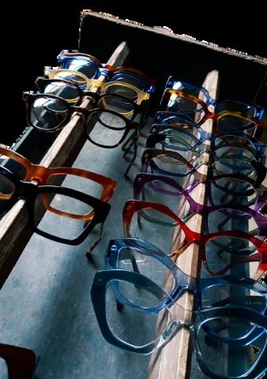

Nossa filosofia de atendimento: a felicidade e o encantamento do cliente, em cada detalhe da venda.
O ponto de partida
Cultura organizacional, empresarial ou corporativa é o conjunto de hábitos, crenças, valores, expectativas e atitudes compartilhados por todos os integrantes de uma empresa.
Em outras palavras: é o jeito OH! de ser. Não está escrito na parede, está no que cada um de nós faz quando o cliente entra pela porta.
A importância de ter uma cultura
É o que define quem somos, o que pensamos e como fazemos as coisas por aqui.
Imagine que a OH! tivesse vida própria e precisasse resolver sozinha os seus B.O.s. Responda pra você mesmo:
Essas respostas são a nossa cultura. E é você que dá voz a elas no balcão.
Um grande abraço acolhedor
Pense na nossa cultura como um grande abraço que envolve a equipe inteira, com um sorriso no rosto e um propósito no coração.
Mostra o caminho quando não existe regra escrita.
Lembra por que a gente faz o que faz.
Dá energia pra alcançar os objetivos juntos.
Venda em 360º
Simples: está em tudo que fazemos.
E qual é a nossa cultura?
Simples! A satisfação do cliente.
Nossa cultura gira em torno do cliente: fazer com que ele se sinta bem naquele espaço.
Além de novos pares de óculos, ele leva a nossa alegria consigo.

A frase que sempre repetimos na loja
“Que você, cliente, possa voltar pra casa melhor e mais feliz do que antes de entrar na nossa loja.”
Etapa 2
Terminou a leitura? Agora dá o play. Dá pra ouvir no caminho pro trabalho, com fone, ou na pausa do café.
Etapa 3